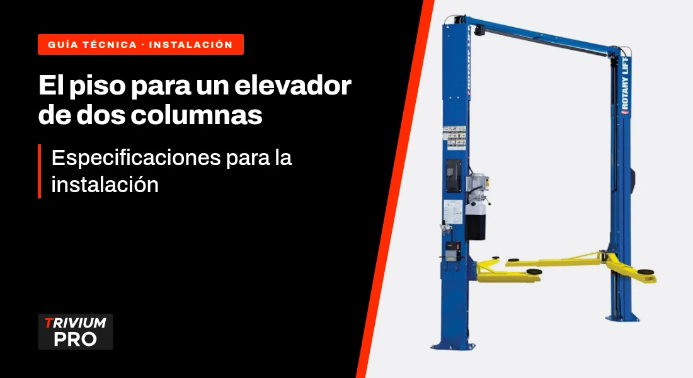

Requisitos del Concreto
Espesor Mínimo
- Superficie: Mínimo 250 mm sin hierros (barras de acero de refuerzo).
- Debajo de esa medida: Hierros o refuerzos según se desee.
- Para elevadores estándar: Mínimo 300 mm total.
- Si el piso existente es insuficiente, vierta zapatas rectangulares de 900 mm de ancho x 4 m de largo x 500-600 mm de profundidad.
Resistencia a la Compresión
- Mínimo 20.7 MPa (210 kg/cm²), recomendado 27.6-40 MPa (hormigón tipo H30/H40 resistente a alto tránsito).
- Verifique con muestras de núcleo o documentación del proveedor.
Tiempo de Curado
- Mínimo 28 días para concreto nuevo o existente.
- No instale en concreto fresco (menos de 14 días). Debe secarse totalmente.
Condiciones de la Superficie y Refuerzos
- Nivelación: Tolerancia máxima de 5 mm por metro, pendiente menor a 3°. El piso debe estar nivelado, bien compactado en la base y sin grietas.
- Refuerzos: Use malla de acero 15×15 cm, diámetro 6 mm mínimo, en área de 1×4 metros. Colóquela debajo de la superficie de 250 mm sin hierros.
- Anclaje: Pernos de 19 mm, a 150 mm de juntas, bordes o grietas. Profundidad de anclaje: 125-175 mm.
- Drenaje y Acabado: Superficie lisa, sin irregularidades, con buen drenaje.
- Advertencias: No instale sobre concreto postensado sin localizar cables. Evite pisos con sótanos sin consultar a un ingeniero. El hormigón debe estar en buenas condiciones.
Preparación e Instalación
- Perfore para verificar espesor y resistencia.
- Si es necesario, vierta losa o zapata nueva con refuerzos (malla y hormigón), documentando resistencia.
- Marque posiciones de columnas, asegurando 3.3-3.6 m de ancho total.
- Fije anclajes con taladro rotativo y torque a 115 Nm.
Consulte el manual del fabricante y a un ingeniero estructural para cumplir con códigos locales y condiciones específicas.